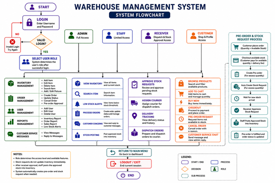

A Project Present to the Faculty Of
College of Computer Information and Communications Technology
Cebu Technical University
In Partial Fulfillment
Of the Requirement for the Subject in
PROGRAMMING 2
By
Ocariza, Amir Nathaniel
Paglinawan, Mark Azkia
Olarte, Jayden John C.
Fuentes, James Menard
Llagas, Rayver John
May 2026
This Warehouse Ordering and Inventory System is dedicated to our families, friends, classmates, and instructors who supported us during the completion of this project. Their encouragement, patience, and guidance helped us continue working through the challenges of designing, coding, testing, and improving the system.
We also dedicate this project to warehouse personnel, staff members, receivers, administrators, and customers who may benefit from a more organized way of handling inventory, stock requests, orders, customer transactions, and pre-order management. This project represents our effort to create a practical system that can reduce manual work, improve record accuracy, and support better warehouse operations.
Above all, we dedicate this work to Almighty God for giving us the knowledge, strength, and determination needed to complete this project.
The researchers would like to express sincere gratitude to everyone who contributed to the completion of the Warehouse Ordering and Inventory System.
First, we thank our families for their support, understanding, and encouragement throughout the development of this project. Their constant motivation helped us stay focused and committed.
We also thank our instructor and adviser for providing guidance, feedback, and knowledge in programming and system development. Their instruction helped us understand how to apply programming concepts, database management, graphical user interface design, and object-oriented programming principles in a real project.
We extend our appreciation to our classmates and friends who shared suggestions and assisted us during planning, testing, and debugging. Their comments helped us improve the usability and functionality of the system.
Finally, we thank God for giving us wisdom, patience, and perseverance from the beginning of the project until its completion.
DEDICATION
ACKNOWLEDGEMENT
TABLE OF CONTENTS
LIST OF TABLES
LIST OF FIGURES
CHAPTER 1: INTRODUCTION
Introduction
Objectives of the Project
Specific Objectives
Scope and Limitations of the Project
Significance of the Project
CHAPTER 2: REVIEW OF RELATED LITERATURE
Review of Literature
Review of Studies
Comparative Matrix
CHAPTER 3: METHODOLOGY
Environment
Technical Feasibility
Hardware and Software Specification
Design
Output and User-Interface Design
Development
Program Workflow
CHAPTER 4: CONCLUSION AND RECOMMENDATION
Conclusion
Recommendations
REFERENCES
APPENDICES
Table 1: Hardware and Software Specification
Table 2: Comparative Matrix of Related Systems
Table 3: User Roles and System Access
Figure 1: Login Form
Figure 2: Admin/Staff Dashboard
Figure 3: Inventory Management Form
Figure 4: Order Management Form
Figure 5: Customer Shop Page
Figure 6: Customer Cart and Checkout Page
Figure 7: Receiver Stock Approval Page
Figure 8: Reports Page
Figure 9: Customer Service Page
Figure 10: Program Workflow
Warehouse operations play an important role in businesses that handle products, supplies, equipment, and customer orders. A warehouse must maintain accurate records of available stock, incoming stock, outgoing orders, customer transactions, and restocking needs. When these processes are handled manually, errors may occur in counting, recording, updating, and monitoring inventory. These errors can lead to delayed transactions, inaccurate stock levels, unorganized records, and poor customer service.
Traditional inventory management often depends on handwritten records, spreadsheets, or verbal updates between staff members. Although these methods may work for small operations, they become difficult to maintain when the number of products, users, and transactions increases. Staff may accidentally enter duplicate records, overlook low-stock items, or approve orders without checking the actual available quantity. Customers may also request more items than the warehouse can immediately provide, which creates confusion if there is no clear process for separating available stock from future stock.
The proposed Warehouse Ordering and Inventory System is designed to help address these problems by providing a computerized desktop-based system developed using Java Swing and MySQL. The system allows authorized users to manage inventory records, create and monitor orders, submit stock requests, approve incoming stock, view reports, and handle customer service messages. It also includes a customer shopping module where customers can browse products, add items to a cart, and proceed to checkout.
One important feature of the system is the checkout and pre-order process. Customers should only be able to check out the available stock quantity of an item. If the customer requests a quantity higher than the available stock, the system automatically separates the transaction. The available quantity is processed as a normal checkout, while the excess quantity is recorded as a pre-order request for the next stock. This feature helps prevent negative inventory, improves customer communication, and gives warehouse staff a clear basis for restocking.
The system also supports role-based access. Administrators can manage users and view reports, staff members can manage inventory and orders, receivers can approve stock requests and dispatch orders, and customers can shop, view purchase history, cancel orders, and send concerns to customer service. Through these features, the Warehouse Ordering and Inventory System aims to improve accuracy, efficiency, and organization in warehouse transactions.
The main objective of this project is to design and develop a Warehouse Ordering and Inventory System using Java programming language and MySQL database. The system aims to provide an organized platform for inventory management, ordering, customer checkout, pre-order handling, stock requests, receiver approval, reporting, and customer service.
1. To develop a secure login and role-based access system.
1.1. To allow users to log in using valid credentials.
1.2. To provide different access levels for admin, staff, receiver, and customer users.
1.3. To protect system functions from unauthorized users.
2. To develop an inventory management module.
2.1. To allow staff or admin users to add, edit, search, and delete item records.
2.2. To store item information such as item code, name, category, quantity, price, location, and image path.
2.3. To help users monitor available stock and low-stock items.
3. To develop an order management module.
3.1. To allow authorized users to create, search, update, and cancel orders.
3.2. To record order details such as customer name, item, quantity, status, date, payment method, and courier information.
3.3. To support order tracking and delivery status updates.
4. To develop a customer shopping and checkout module.
4.1. To allow customers to browse products by category and search keyword.
4.2. To allow customers to add items to a cart and proceed to payment.
4.3. To compute the amount due based only on available stock.
4.4. To automatically request a pre-order when the customer quantity exceeds available stock.
5. To develop a stock request and approval module.
5.1. To allow stock requests to be submitted when inventory needs to be replenished.
5.2. To allow receivers to approve pending stock requests.
5.3. To allow staff to post approved stock into inventory.
6. To develop a customer service module.
6.1. To allow customers to submit order concerns, payment concerns, product availability questions, and account help requests.
6.2. To allow staff or admin users to read and reply to customer messages.
6.3. To allow customers to view replies from their profile or customer service page.
7. To generate useful reports.
7.1. To display daily inventory records.
7.2. To show low-stock alerts.
7.3. To provide inventory, order, and sales reports.
8. To apply object-oriented programming principles.
8.1. To organize the system into separate Java classes and modules.
8.2. To use reusable methods for data access, interface design, and system operations.
8.3. To maintain clear separation between user interface logic and database operations.
The study focuses on the development of a desktop-based Warehouse Ordering and Inventory System using Java Swing and MySQL. The system includes user login, role-based access, inventory management, order management, stock requests, receiver approval, customer shopping, checkout, pre-order handling, reports, and customer service.
The system allows admin users to manage users, view reports, manage inventory, manage orders, and answer customer concerns. Staff users can manage inventory, handle orders, submit stock requests, post approved stock, and assist customers. Receiver users can approve stock requests, assign courier details, and monitor dispatch history. Customer users can browse products, add products to cart, check out available stock, request pre-orders for excess quantities, view purchase history, cancel orders, and send customer service messages.
The system stores data in a MySQL database. Records include users, items, stock requests, orders, and customer service messages. The system also supports product images stored through file paths.
The system is designed for desktop use only and does not include a mobile application version.
The system uses simulated payment features such as QR code display and walk-in payment entry. It is not connected to real payment gateways.
The system does not include barcode scanners, RFID scanners, or automated warehouse hardware.
The system does not include real-time delivery tracking or GPS courier tracking.
The pre-order feature records excess quantity and creates stock requests, but fulfillment still depends on receiver approval and staff posting of new stock.
The system requires a running MySQL database connection and does not support offline operation.
The system is intended for academic project use and may require further testing, security improvements, and deployment preparation before use in an actual business environment.
For Warehouse Staff
The system helps warehouse staff organize item records, monitor stock levels, submit stock requests, manage orders, and reduce manual recording errors.
For Administrators
The system assists administrators in managing user accounts, reviewing reports, monitoring inventory, and overseeing warehouse operations.
For Receivers
The receiver module provides a structured way to approve stock requests and manage order dispatch processes.
For Customers
The customer module provides a convenient way to browse products, place orders, check out available stock, request pre-orders, view order history, cancel orders, and send concerns.
For Future Researchers
This project may serve as a reference for students who want to develop similar inventory, ordering, stock request, or warehouse management systems using Java and MySQL.
Inventory management is a major part of warehouse operations because it directly affects product availability, customer satisfaction, and business continuity. Baraka and Yadavalli (2022) explained that inventory is a central function in supply chain and logistics management. Their systematic review emphasized that inventory control is important because demand, supply, and stock availability affect how organizations meet customer needs.
Warehouse management systems are designed to provide accurate records and improve the movement of goods inside an organization. Zhang and Pan (2022) designed and implemented an intelligent warehouse management system based on MySQL database technology. Their study emphasized that a warehouse system can support basic information management, system management, procurement, warehousing, and inventory management. This supports the design of the proposed system because the Warehouse Ordering and Inventory System also uses MySQL to store and manage warehouse records.
Manual inventory processes are often associated with inaccurate records, slow searching, and inefficient reporting. Janah, Atina, and Permatasari (2024) discussed the digital transformation of warehouse management through a web-based information system. Their study identified manual stock recording as a source of errors and document accumulation. The proposed Warehouse Ordering and Inventory System addresses similar issues by replacing manual recording with a computerized inventory and order database.
Mukti (2021) developed an inventory information system using Java, NetBeans, and MySQL. The study showed that Java-based inventory systems can help administrators manage item data and reports more efficiently. This is related to the present project because the proposed system is also developed using Java and MySQL, and it includes inventory, order, and reporting modules.
Kumaladewi and Firdaus (2025) analyzed and designed an inventory management information system for a company that relied on manual inventory processes. Their study highlighted features such as real-time inventory tracking, restocking alerts, and transaction histories. These ideas are related to the proposed system because it includes stock monitoring, low-stock reports, stock requests, and transaction records.
Several studies show that computerized inventory and warehouse systems improve operational efficiency. Zhang and Pan (2022) reported that a MySQL-based warehouse management system can provide automatic and comprehensive records for warehouse activities. This supports the need for a database-backed system that can store item records, order details, stock requests, and customer transactions.
Mukti (2021) showed that Java and MySQL can be used to create an inventory system that helps administrators manage inventory records and generate reports. This study is important to the proposed project because both systems use Java as the main programming language and MySQL as the database.
Janah et al. (2024) found that digital warehouse systems can reduce recording errors and improve reporting and distribution processes. This relates to the proposed project because the system aims to reduce manual work and provide more organized warehouse records.
Kumaladewi and Firdaus (2025) emphasized that inventory systems can support faster item retrieval, transaction history, and restocking decisions. The proposed system applies similar concepts by allowing users to search items, monitor stock, and generate stock requests when inventory is insufficient.
Table 2: Comparative Matrix of Related Systems
| System or Study | Main Features | Similarity to Proposed System | Difference from Proposed System |
|---|---|---|---|
| Zhang and Pan (2022) MySQL Warehouse Management System | MySQL database, warehouse modules, inventory records | Uses database-backed warehouse records | Focuses on intelligent warehouse design, while this project includes customer checkout and pre-order requests |
| Mukti (2021) Java Inventory System | Java-based inventory, MySQL database, reports | Uses Java and MySQL for inventory management | Does not focus on customer shop, checkout, and automatic pre-order |
| Janah et al. (2024) Web Warehouse Information System | Stock monitoring, restock notifications, reporting | Supports digital warehouse management | Web-based, while this project is desktop-based Java Swing |
| Kumaladewi and Firdaus (2025) Inventory Management Information System | Inventory tracking, restocking, transaction history | Similar focus on inventory accuracy and restocking | Uses a different development environment and does not include the same customer ordering flow |
| Proposed Warehouse Ordering and Inventory System | Role-based login, inventory, orders, customer shop, checkout, pre-order, stock request approval, reports, customer service | Combines inventory, ordering, customer, receiver, and reporting features | Academic desktop application using Java Swing and MySQL |
This chapter outlines the systematic processes and technical frameworks utilized to build the Warehouse Ordering and Inventory System. It covers the development environment, the feasibility of the architecture, and the specific design to development pipeline used to transition the planned warehouse workflows into a functional Java Swing and MySQL desktop application.
The Warehouse Ordering and Inventory System was developed in an academic environment as a requirement for the subject Programming 2. The system was created as a desktop-based Java application with a graphical user interface. Development was conducted using Java programming tools and a MySQL database server.
The system is intended for a warehouse setting where products are managed, stock levels are monitored, and customers can place orders. The system supports different users involved in the warehouse process, including administrators, staff, receivers, and customers.
The project is technically feasible because the required tools are available and suitable for the system. Java provides the programming language and Swing library for building the graphical user interface. MySQL provides the database for storing user accounts, item records, orders, stock requests, and customer service messages. The MySQL Connector/J library allows the Java program to communicate with the database.
The system is modular and divided into different forms and classes such as LoginForm, MainMenu, InventoryForm, OrderForm, ReceiverForm, CustomerMainMenu, CustomerServiceForm, ReportForm, UserForm, and DataStorage. This structure makes the project easier to maintain, test, and improve.
Table 1: Hardware and Software Specification
| Category | Specification |
|---|---|
| Processor | Intel Core i3 or higher |
| Memory | At least 4GB RAM, 8GB recommended |
| Storage | At least 500MB free storage for application files and database |
| Operating System | Windows 10 or later |
| Programming Language | Java |
| GUI Library | Java Swing |
| Database | MySQL |
| Database Driver | MySQL Connector/J |
| IDE | IntelliJ IDEA, NetBeans, Eclipse, or any Java IDE |
The system design follows a modular desktop application structure. Each major function is placed in a separate form or class. The DataStorage class handles database operations such as adding items, loading items, creating orders, adding stock requests, approving stock requests, updating users, and retrieving reports.
The LoginForm serves as the entry point of the system. After successful login, the system checks the user's role. Admin, staff, and receiver users are routed to the main dashboard, while customers are routed to the customer shopping interface.
The MainMenu class controls navigation for admin, staff, and receiver users. It displays modules based on the user's role. Admin users have access to user management, inventory, orders, reports, and customer service. Staff users have access to operational modules but not user management. Receiver users focus on dispatch and stock approval.
The CustomerMainMenu class provides the customer-side workflow. Customers can browse products, add items to cart, proceed to payment, view purchase history, cancel orders, and contact customer service.
Figure 1: Authentication Form. Login Form
The login form allows users to enter their username and password. If the credentials are valid, the system opens the appropriate interface based on the user's role.
Figure 2: Admin/Staff Forms. Inventory Management Form
The inventory form allows authorized users to add, edit, search, and delete warehouse items. Item records include item code, item name, category, quantity, price, location details, and image path.
Figure 3: Admin/Staff Forms. Order Management Form
The order form allows staff or admin users to create orders, search records, update order status, cancel orders, and submit stock requests.
Figure 4: Receiver Forms. Stock Approval Form
The receiver form allows receiver users to view pending orders, assign courier information, view dispatch history, and approve pending stock requests.
Figure 5: Customer Forms. Product Browsing Form
The customer shop displays available products with product images, prices, categories, and stock information. Customers can search and filter items before adding them to the cart.
Figure 6: Customer Forms. Cart and Checkout Form
The cart shows the selected items and requested quantities. The checkout process separates available stock from excess quantity. Available stock is processed as a paid order, while excess quantity is recorded as a pre-order request.
Figure 7: Admin/Staff Forms. Reports Form
The reports module displays daily inventory, low-stock alerts, inventory reports, order reports, and sales reports.
Figure 8: Customer Service Form
The customer service module allows customers to send concerns and allows staff or admin users to reply.
The system was developed using Java and MySQL. Java Swing was used to build the graphical user interface, while MySQL was used to store records. The development process included planning, interface design, coding, database integration, testing, and debugging.
The database includes tables for users, items, stock requests, orders, and customer service messages. These tables allow the system to maintain organized records and support the main processes of the warehouse.
The checkout and pre-order feature was developed to enforce the rule that a customer can only check out the available stock quantity. If the customer requests more than the available stock, the excess is automatically saved as a pre-order request and a stock request is created for the next inventory replenishment.

Figure 9: Program Workflow. Warehouse Ordering and Inventory System Flowchart
1. User opens the application.
2. User logs in using username and password.
3. System validates credentials from the database.
4. System identifies the user's role.
5. System opens the correct interface.
1. Admin or staff logs in.
2. User opens the dashboard.
3. User manages inventory, orders, reports, stock requests, or customer service.
4. Changes are saved to the MySQL database.
1. Receiver logs in.
2. Receiver views order queue or stock approvals.
3. Receiver approves stock requests.
4. Approved stock becomes available for staff posting.
5. Staff posts approved stock to inventory.
1. Customer logs in.
2. Customer browses products.
3. Customer selects an item and quantity.
4. Customer adds the item to cart or buys now.
5. System checks requested quantity against available stock.
6. If requested quantity is within stock, the system processes a normal checkout.
7. If requested quantity exceeds stock, the system separates the transaction.
8. Available stock is checked out and paid.
9. Excess quantity is recorded as a pre-order request.
10. A stock request is automatically created for the excess quantity.
11. Receiver reviews and approves the stock request.
12. Staff posts new stock once approved.
1. Customer logs in to the system.
2. Customer opens the Customer Service page.
3. Customer selects the concern subject, such as order concern, payment concern, product availability, or account help.
4. Customer enters the order ID if the concern is related to an order.
5. Customer types the message or concern.
6. System validates that the message is not empty.
7. System saves the customer service message to the database.
8. Admin or staff opens the Customer Service module.
9. Admin or staff reads the customer message.
10. Admin or staff writes and submits a reply.
11. System saves the reply to the database.
12. Customer refreshes or reopens the Customer Service page to view the reply.
1. Customer logs in and opens the profile page.
2. Customer views purchase history.
3. Customer selects an order from the table.
4. System checks if the order is already cancelled or delivered.
5. If the order is delivered, the system prevents cancellation.
6. If the order is still cancellable, the customer enters the cancellation reason.
7. System validates that a cancellation reason is provided.
8. Customer confirms the cancellation.
9. System updates the order status to cancelled.
10. If the cancelled order used available stock, the system returns the quantity to inventory.
11. If the cancelled order is a pre-order, no inventory stock is returned.
12. System sends a notification record to customer service for admin or staff review.
1. Customer selects item quantity.
2. System reads the current stock quantity.
3. System compares requested quantity with available stock.
4. If stock is enough, the full requested quantity proceeds to normal checkout.
5. If stock is not enough, the system computes available quantity and excess quantity.
6. Available quantity is processed as the current checkout quantity.
7. Customer pays only for the available quantity and delivery fee.
8. Excess quantity is marked as pre-order requested.
9. System creates a pre-order order record for the excess quantity.
10. System automatically creates a stock request for the excess quantity.
11. Receiver reviews the stock request.
12. Receiver approves the stock request.
13. Staff posts the approved stock to inventory.
14. The pre-order can be processed once the next stock is available.
1. Admin or staff logs in to the system.
2. Admin or staff opens the Inventory module.
3. User chooses Add Item or Edit Item.
4. User enters or updates item details such as item code, item name, category, quantity, price, aisle, rack, and bin code.
5. User selects or updates the item image.
6. System saves the image path together with the item record.
7. System stores the updated item information in the database.
8. Customer shop reloads product records from inventory.
9. Updated item image appears in the customer product card.
The development of the Warehouse Ordering and Inventory System achieved its main objective of creating a desktop-based application for managing inventory, orders, stock requests, customer transactions, reports, and customer service. By using Java Swing and MySQL, the researchers were able to create a system that organizes warehouse records and supports different user roles.
The system improves the traditional warehouse process by reducing manual recording, organizing item data, supporting order management, and providing clear stock monitoring. The role-based access feature ensures that users only access the modules intended for their responsibilities.
One of the important features of the system is the customer checkout and pre-order process. The system ensures that customers only check out the available stock quantity. If the requested quantity exceeds the current stock, the excess is automatically recorded as a pre-order request for the next stock. This helps prevent negative stock values, improves customer communication, and gives staff a clearer restocking requirement.
Overall, the Warehouse Ordering and Inventory System provides a functional academic prototype that demonstrates the practical use of programming, database management, graphical user interface design, and object-oriented programming in solving warehouse-related problems.
The researchers recommend the following improvements for future development:
1. Add barcode or QR code scanning for faster item lookup and stock updates.
2. Integrate real payment gateways such as GCash, Maya, or bank payment APIs.
3. Add automatic notification features for approved stock requests, shipped orders, and customer replies.
4. Add real-time courier tracking for delivery monitoring.
5. Improve security by hashing passwords and adding stronger account validation.
6. Add backup and restore features for the database.
7. Create a mobile or web version for easier access outside the desktop environment.
8. Add automatic fulfillment of pre-orders once new stock is posted.
9. Improve report generation by adding printable PDF or Excel exports.
10. Conduct more user testing with actual warehouse staff and customers.
Baraka, J. C. M., & Yadavalli, S. V. (2022). Inventory management concepts and implementations: A systematic review. South African Journal of Industrial Engineering, 32(2), 15-36. https://doi.org/10.7166/33-2-2527
Janah, S. M., Atina, V., & Permatasari, H. (2024). Digital transformation of warehouse management through web-based information system at CV. Al Salam. Jurnal Mandiri IT, 13(1). https://doi.org/10.35335/mandiri.v13i1.330
Kumaladewi, N., & Firdaus, R. F. (2025). Analysis and Design of Inventory Management Information Systems at PT. XYZ. Applied Information System and Management, 8(1), 53-64. https://doi.org/10.15408/aism.v8i1.42602
Mukti, H. (2021). Sistem Informasi Inventory Barang Pada PT. Assami Ananda Berbasis Java Neatbeans. PETIR, 14(2), 139-149. https://doi.org/10.33322/petir.v14i2.884
Zhang, Y., & Pan, F. (2022). Design and implementation of a new intelligent warehouse management system based on MySQL database technology. Informatica, 46(3). https://doi.org/10.31449/inf.v46i3.3968
Appendix A: Source Code
The source code includes the Java files used in the development of the Warehouse Ordering and Inventory System. Major files include LoginForm.java, MainMenu.java, InventoryForm.java, OrderForm.java, ReceiverForm.java, CustomerMainMenu.java, CustomerServiceForm.java, ReportForm.java, UserForm.java, UserRole.java, DatabaseConfig.java, and DataStorage.java.
Appendix B: Database Schema
The database schema includes tables for users, items, stock_requests, orders, and customer_service_messages.
Appendix C: Screenshots
Screenshots of the login form, main dashboard, inventory form, order form, customer shop, checkout page, receiver approval page, report page, and customer service page may be inserted in this section.